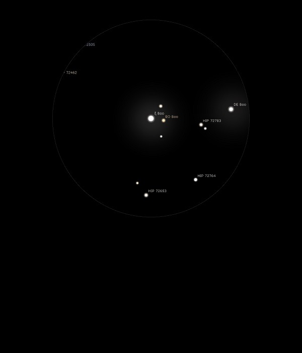

Xi Bootis

Double Star in Bootes
HIP 72659A and B
Mags 4.65 and 7.00
37 Boo
12/05/15
A neat double star with the brighter at Mag 4.65 and it's fainter and leading companion at Mag 7.00
Both yellow and appear the same colour in a neat 12mm FOV